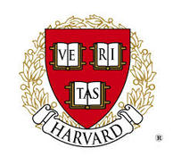
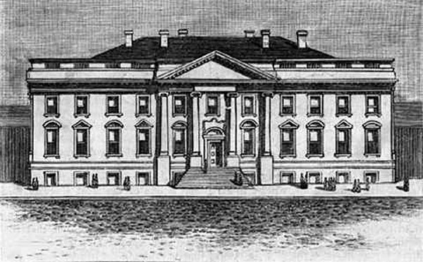

Presidential Canidate
Hello my name is Ronald G. Taylor and I am running for the President of the United States. I see many great things in our society today but I see a need for improvement to like with our education and the need to unify our country by raising taxes for different income levels. I know what you are saying more taxes but the extra tax money that we take will help the homeless the needy and the disabled.
Education
 I feel that we should educate our children because if we do we can create a new and extremely brilliant society that is filled with innovators self sufficient people because did you know that 85% of crimes that are committed in the United States are committed by dropouts and non educated people. To think we could wipe out 85% of crime in america if we just educate our young people.Unity
Unity that is what I hope America will be some day. I want a country where we are self sufficient from other countries so we can help them with hard times like financial depressions and food droughts. I think this would be a good thing to do because if we can agree with each other surely we can agree with other countries and wipe out war and genesi around the world and we can grow together as earth instead apart you know saying 2 minds are better than one.
Role Model
Who is a leader in business, giving , and a great role model, John Rogers, Jr. that's who. John W. Rogers, Jr. is a multi-millionaire who manages over 16 billion dollars in the state of Illinois. He gives to the poor and homeless of Chicago. John W. Rogers should be named Person of the Year because he has received awards, he is a trustee for the University of Chicago, and he leads his own foundation to help the homeless and the children of Chicago. John W. Rogers, Jr. was an excellent college student, and achieved many honors. He was awarded the Woodrow Wilson Award which is given to people who achieve straight A's. This award helps with getting jobs after college. John also played on the Princeton basketball team and was the captain. John still loves basketball and donates to a local team. Also he keeps up with his college basketball teammates and still attends homecoming every year. As a mutual fund manager, it is important to be the best of the best, so you can manage people's money. His next achievement is he is a trustee for the University of Chicago. He got selected because of his financial experience as founder of Ariel Investments. Being on a college board is a very high award and is only given to people who are respectful and kind to other people. At first, John did not know what the job involved . Then, he researched the topic and found that it does deal with money so he was pleased. The University of Chicago website indicates that it sponsors a scholarship for high school students. John has also created the Ariel Community Academy that is achieving great things. An example is, in 2009 John W. Rogers, Jr gave $200,000 to the young people in Chicago. The academy teaches Chicago students about investing. The reason he donated the money was because he takes pride in all children's education. He has his own foundation called the John W. Rogers, Jr. Foundation. He created his foundation so people who need financial help can get help. He also gives to the Homeless Foundation of Chicago. He gives to the Homeless Foundation because he wants to help the people out of the troubles they are in. John W. Rodgers, should be named Person of the Year because he has received awards, he is the trustee of the University of Chicago, he leads his own foundation to help the homeless and the kids of Chicago, which makes him worthy of being person of the year. John also earned Princeton's highest Award. He helped decide the budget of the University of Chicago. Without a doubt, that's why he should be Person of the Year.
Vote me Ronald G. Taylor for Presedent of the United States
Here is a sample of how I want our earth to be.